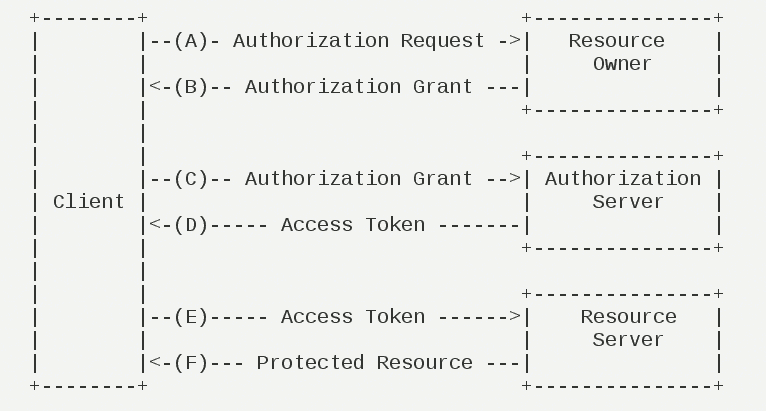
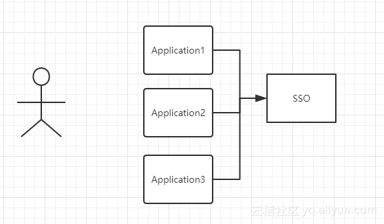
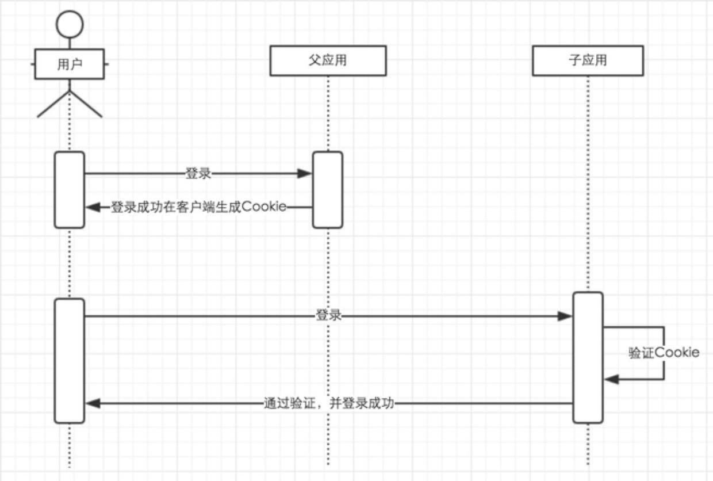
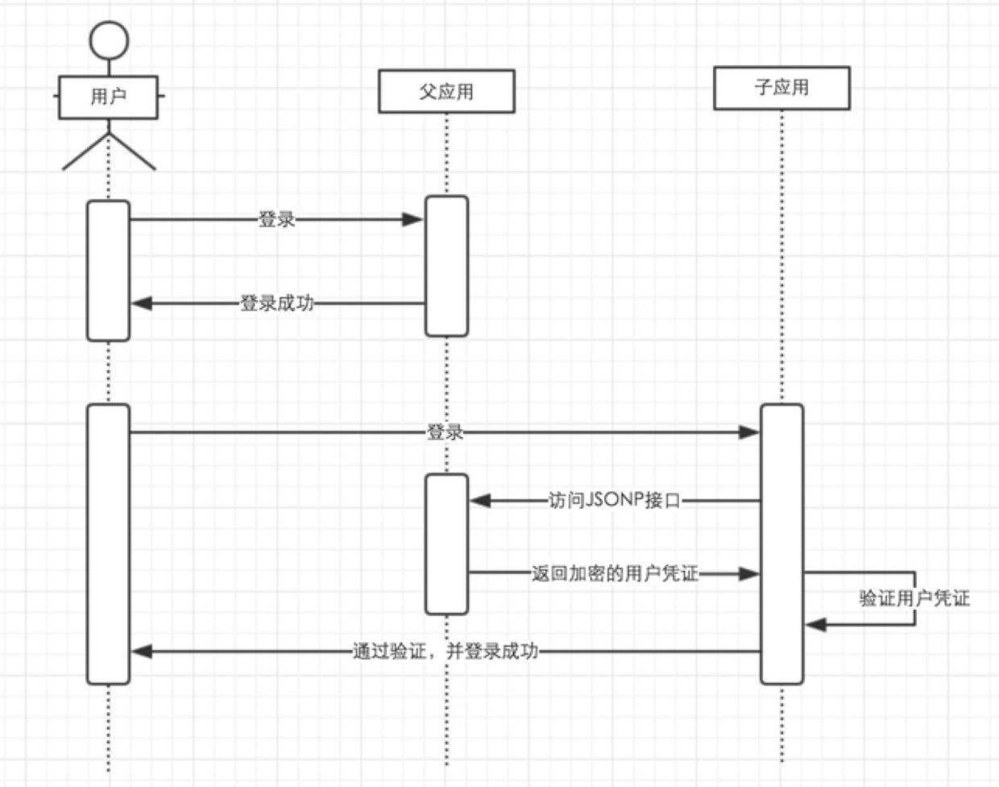
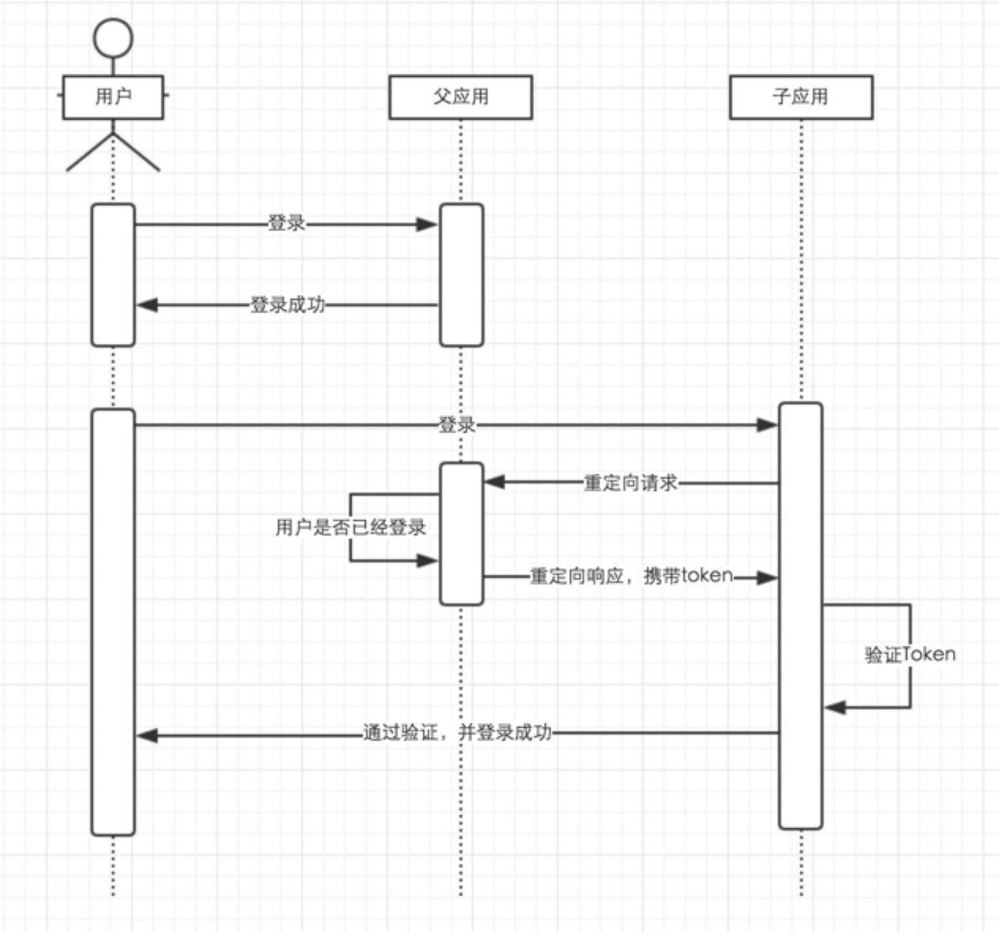
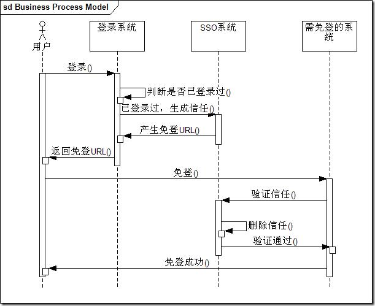
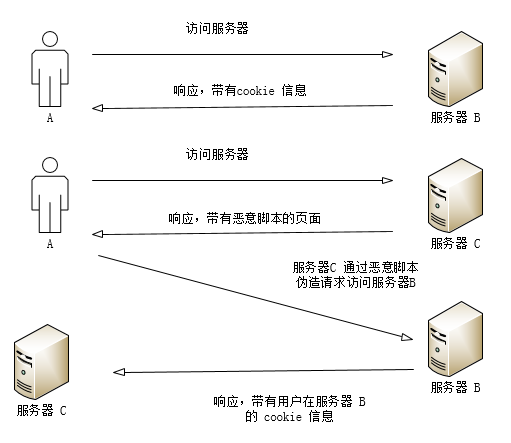

唯物主义承认世界是可知的，但是否认有全知者(神)存在。唯物主义认识到上述论断包含矛盾，但是不试图解决这个矛盾，而是把它承认下来，认为万事万物都是包含矛盾的，越矛盾就越真实。唯物论有两大核心：一个是物质，一个是意识；两大规律：唯物主义一元论(世界物质统一性原理)，物质和意识的辩证关系的原理。
一、基础
鉴权：鉴权(authentication)是指验证用户是否拥有访问系统的权利。
- 传统的鉴权是通过密码来验证的，这种方式的前提是，每个获得密码的用户都已经被授权。在建立用户时，就为此用户分配一个密码，用户的密码可以由管理员指定，也可以由用户自行申请。这种方式的弱点十分明显：一旦密码被偷或用户遗失密码，情况就会十分麻烦，需要管理员对用户密码进行重新修改，而修改密码之前还要人工验证用户的合法身份。
- 目前的主流鉴权方式是利用认证授权来验证数字签名的正确与否。
- 实现
- HTTP Basic Authentication
- session-cookie
- Token验证
- OAuth(开放授权)：OAuth是Open Authorization的简写，它是一个关于授权(Authorization)的开放网络标准，在全世界得到广泛应用，目前的版本是2.0版。它为用户资源的授权提供了一个安全、开放而又简易的标准，与以往的授权方式不同之处是OAuth的授权不会使第三方触及到用户的帐号信息(如用户名与密码)，即第三方无需使用用户的用户名与密码就可以申请获得该用户资源的授权，因此OAuth是安全的。
- 流程

- 第一步：用户打开客户端以后，客户端要求用户给予授权。
- 第二步：用户同意给予客户端授权。
- 第三步：客户端使用上一步获得的授权，向认证服务器申请令牌。
- 第四步：认证服务器对客户端进行认证以后，确认无误，同意发放令牌。
- 第五步：客户端使用令牌，向资源服务器申请获取资源。
- 第六步：资源服务器确认令牌无误，同意向客户端开放资源。
上面六个步骤之中，第二步关键，即用户怎样才能给于客户端授权。有了这个授权以后，客户端就可以获取令牌，进而凭令牌获取资源。
- 四种授权模式
- 授权码模式(authorization code)
- 隐式授权模式，也称简化模式(implicit)
- 密码授权模式(resource owner password credentials)
- 客户端凭证授权模式(client credentials)
- 参考
- 流程
加密：是以某种特殊的算法改变原有的信息数据，使得未授权的用户即使获得了已加密的信息，但因不知解密的方法，仍然无法了解信息的内容。
- 分类
- 对称加密：双方采用共同密钥(对外保密的)
- 非对称加密：存在两个密钥，一种是公共密钥(可以公开)，一种是私人密钥(对外保密)
- 分类
单点登录：单点登录英文全称Single Sign On，简称就是SSO。它的解释是：在多个应用系统中，只需要登录一次，就可以访问其他相互信任的应用系统。实现单点登录说到底就是要解决如何产生和存储那个信任，再就是其他系统如何验证这个信任的有效行。

实现
以Cookie作为凭证媒介：用户登录父应用之后，应用返回一个加密的cookie，当用户访问子应用的时候，携带上这个cookie，授权应用解密cookie并进行校验，校验通过则登录当前用户。

通过JSONP实现：用户在父应用中登录后，跟Session匹配的Cookie会存到客户端中，当用户需要登录子应用的时候，授权应用访问父应用提供的JSONP接口，并在请求中带上父应用域名下的Cookie，父应用接收到请求，验证用户的登录状态，返回加密的信息，子应用通过解析返回来的加密信息来验证用户，如果通过验证则登录用户。

通过页面重定向的方式：父应用提供一个GET方式的登录接口，用户通过子应用重定向连接的方式访问这个接口，如果用户还没有登录，则返回一个的登录页面，用户输入账号密码进行登录。如果用户已经登录了，则生成加密的Token，并且重定向到子应用提供的验证Token的接口，通过解密和校验之后，子应用登录当前用户。

session形式

token机制
- 客户端使用用户名跟密码请求登录
- 服务端收到请求，去验证用户名与密码
- 验证成功后，服务端会签发一个 Token，这个Token是与用户名一一对应的，token一般可以存储在缓存或数据库中，以方便后面查询出来进行验证，再把这个 Token 发送给客户端
- 客户端收到 Token 以后可以把它存储起来，比如放在 Cookie 里或者 Local Storage 里
- 客户端每次向服务端请求资源的时候需要带着服务端签发的 Token
- 服务端收到请求，然后去验证客户端请求里面带着的 Token，如果验证成功，就向客户端返回请求的数据
Token存在过期时间，生成的时候可以打上一个时间戳，验证token的时候同时验证是否过期，并告知客户端。客户端接收到token过期的返回后，则要求用户重新输入用户名跟密码，进行登录
用户的一些操作需要重新请求下服务端，如退出、修改密码后重新登录更新token
sign机制
- 将除“sign”以外的所有请求参数按key进行字典升序
- 以“key1=value1&key2=value2…”的形式拼接成一个字符串
- 在上一步得到的字符串前面加上验证密钥key(这里的密钥key是接口提供方分配给接口接入方的)
- 计算第3步字符串的md5值(32位)或别的加密算法，然后转成大写,得到的字符串作为sign的值
根据签名规则计算得到参数的签名值，和参数中通知过来的sign对应的参数值进行对比，如果是一致的那么就校验通过，如果不一致说明参数被修改过。
二、常见网络安全及预防
随着Web2.0、社交网络、微博等等一系列新型的互联网产品的诞生，基于Web环境的互联网应用越来越广泛，企业信息化的过程中各种应用都架设在Web平台上，Web业务的迅速发展也引起黑客们的强烈关注，接踵而至的就是Web安全威胁的凸显，黑客利用网站操作系统的漏洞和Web服务程序的SQL注入漏洞等得到Web服务器的控制权限，轻则篡改网页内容，重则窃取重要内部数据，更为严重的则是在网页中植入恶意代码，使得网站访问者受到侵害。
XSS：跨站脚本（Cross-site scripting）
全称“跨站脚本”，是注入攻击的一种。其特点是不对服务器端造成任何伤害，而是通过一些正常的站内交互途径，例如发布评论，提交含有
JavaScript的内容文本。这时服务器端如果没有过滤或转义掉这些脚本，作为内容发布到了页面上，其他用户访问这个页面的时候就会运行这些脚本。如何预防
- 对HTML标签及一些特殊符号进行转义(php函数strip_tags()、htmlspecialchars())
1
2
3
4
5
6
7
8$text = '<p>Test paragraph.</p><!-- Comment --> <a href="#fragment">Other text</a>';
echo strip_tags($text); // Test paragraph. Other text
echo "\n";
echo strip_tags($text, '<p><a>');// 允许<p>和<a>，输出<p>Test paragraph.</p> <a href="#fragment">Other text</ a>
$new = htmlspecialchars("<a href='test'>Test</a>", ENT_QUOTES);
echo $new; // <a href='test'>Test</a>- 使用白名单、黑名单的方式进行过滤
CSRF：跨站请求伪造（Cross-site request forgery）
- 全称“跨站请求伪造”，也被称为
one click attack/session riding，缩写为：CSRF/XSRF。危害是攻击者可以盗用你的身份，以你的名义发送恶意请求。比如可以盗取你的账号，以你的身份发送邮件，购买商品等。
- 如何预防
- 为表单提交都加上自己定义好的token然后加密好
- 验证 HTTP Referer 的值
- 全称“跨站请求伪造”，也被称为
SQL注入
通过把SQL命令伪装成正常的HTTP请求参数，传递到服务端，欺骗服务器最终执行恶意的SQL命令，达到入侵的作用。
如何防御
- 检查变量数据类型和格式
- 过滤特殊符号(php函数addslashes)
1
2$str = "Is your name O'reilly?";
echo addslashes($str);// 输出： Is your name O\'reilly?绑定变量，使用预编译语句
DDoS攻击（Distributed Denial of Service)
- 借助于客户/服务器技术，将多个计算机联合起来作为攻击平台，对一个或多个目标发动DDoS攻击，从而成倍地提高拒绝服务攻击的威力。通常，攻击者使用一个偷窃帐号将DDoS主控程序安装在一个计算机上，在一个设定的时间主控程序将与大量代理程序通讯，代理程序已经被安装在网络上的许多计算机上。代理程序收到指令时就发动攻击。利用客户/服务器技术，主控程序能在几秒钟内激活成百上千次代理程序的运行。
- 如何防御
- 及时更新系统补丁
- 安装查杀软硬件，及时更新病毒库
- 设置复杂口令，减低系统被控制的可能性
- 关闭不必要的端口与服务
- 经常检测网络的脆弱性，发现问题及时修复。
- 对于重要的web服务器可以建立多个镜像实现负载均衡，在一定程度上减轻DDOS的危害
- 防止表单重复提交
- 表单在网页中主要负责数据采集功能，一般由三个基本组成部分：①表单标签：这里面包含了处理表单数据所用CGI程序的URL以及数据提交到服务器的方法。②表单域：包含了文本框、密码框、隐藏域、多行文本框、复选框、单选框、下拉选择框和文件上传框等。③表单按钮：包括提交按钮、复位按钮和一般按钮；用于将数据传送到服务器上的CGI脚本或者取消输入，还可以用表单按钮来控制其他定义了处理脚本的处理工作。
- 产生原因
- 点击提交按钮两次
- 点击刷新按钮
- 使用浏览器后退按钮重复之前的操作，导致重复提交表单
- 使用浏览器历史记录重复提交表单
- 浏览器重复的HTTP请求
- 如何预防
- js禁掉提交按钮
- 使用PRG模式
- 服务端生成随机值，客户端拿到后放在隐藏域，提交后服务端销毁随机值
- 使用header函数跳转页面
- 表单过期的处理
- 使用header头设置缓存控制头cache-control
- 使用session_cache_limiter方法
- 判断表单动作的技巧
- 在数据库里添加唯一约束
- 使用cookie处理
防盗链：如果一个网站没有页面中所说的资源，它就会把这个图片链接到别的网站，这样没有任何资源的网站利用了别的网站的资源来展示给浏览者，提高了自己的访问量，而大部分浏览者又不会很容易地发现，这样对于那个被利用了资源的网站是不公平的。一些不良网站为了不增加成本而扩充自己站点内容，经常盗用其他网站的链接。一方面损害了原网站的合法利益，另一方面又加重了原网站服务器的负担。
- 盗链的定义：要访问的内容不在自己服务器上，而通过技术手段绕过别人放广告有利益的最终页，直接在自己的有广告有利益的页面上向最终用户提供此内容。常常是一些名不见经传的小网站来盗取一些有实力的大网站的地址（比如一些音乐、图片、软件的下载地址）然后放置在自己的网站中，通过这种方法盗取大网站的空间和流量。
- 一般情况下，当我们浏览一个网页时，并不是一次请求就会把整个页面的内容传到本地浏览器，尤其是当这个页面带有图片或者其它资源。第一次请求会传回该页面的HTML文本，浏览器解析该文本发现还有图片，会发送第二次请求，请求获得图片。
- 盗链问题是：如果一个网站没有页面中所说的资源，它就会把这个图片链接到别的网站，这样没有任何资源的网站利用了别的网站的资源来展示给浏览者，提高了自己的访问量，而大部分浏览者又不会很容易地发现，这样对于那个被利用了资源的网站是不公平的。一些不良网站为了不增加成本而扩充自己站点内容，经常盗用其他网站的链接。一方面损害了原网站的合法利益，另一方面又加重了原网站服务器的负担。
- 防盗链的八种方案
- 判断引用地址：判断浏览器请求时HTTP头的referer字段的值
- 使用登录验证：当访客请求网站上的一个资源时，先判断此请求是否通过登录验证
- 使用cookie：产生一个动态值的cookie，然后在处理资源下载请求时先判断cookie里有没有正确的cookie
- 使用POST下载：下载链接换成一个表单和一个提交按钮，将待下载的文件的名称或id放到表单的一个隐藏文本框里，当用户点击提交按钮时，服务程序先判断请求是否为POST方式
- 使用图形验证码：使用这个方法可以保证每次下载都是“人”在你的网站上下载，而不是下载工具。
- 使用动态文件名，也叫动态钥匙法，当用户点击一个下载链接时，先在程序端按一定规律计算产生一个Key，然后在数据库或cache里记录这个Key以及它所对应的资源ID或文件名，最后让网页重定向一个新的URL地址，这个新URL地址里需要包含这个Key。当浏览器或下载工具发出下载请求时，程序先检测这个Key是否存在，如果存在则返回对应的资源数据。
- 擅改资源的内容：修改文件的可写入区，从而计算出的哈希值跟源文件不一致。
- 打包下载：在原始的文件基础上再加个外壳，让资源的哈希值跟别人的不一样。
盐：如果直接对密码进行散列(如php的md5函数)，那么黑客可以对通过获得这个密码散列值，然后通过查散列值字典(例如MD5密码破解网站)，得到某用户的密码。
加盐(salt)：为了加强MD5的安全性加入了新的算法部分即加盐值，然后散列，再比较散列值以确定密码是否正确。加盐值是随机生成的一组字符串，可以包括随机的大小写字母、数字、字符，位数可以根据要求而不一样，即使用户输入的密码一样，使用不同的加盐值产生的最终密文是不一样的。过程如下：
- 拿到用户输入的明文值
- 对明文值进行md5得到hash值
- 随机生成加盐值并保存(如存入mysql等)或对盐值进行某种加密再保存，取的时候再进行解密
- 加盐值拼接步骤2的hash值进行md5得到最终的密文
demo
1
2
3
4
5
6function saltHash($password) {
$salt = md5(mcrypt_create_iv(32)); // 随机初始化加盐值
$password = md5($password).$salt; // 把密码进行md5加密拼接salt值
$password = md5($password); // 执行md5加密
return $password; // 返回结果
}
三、demo
1 | $str = trim($_POST['name']); //清理空格 |